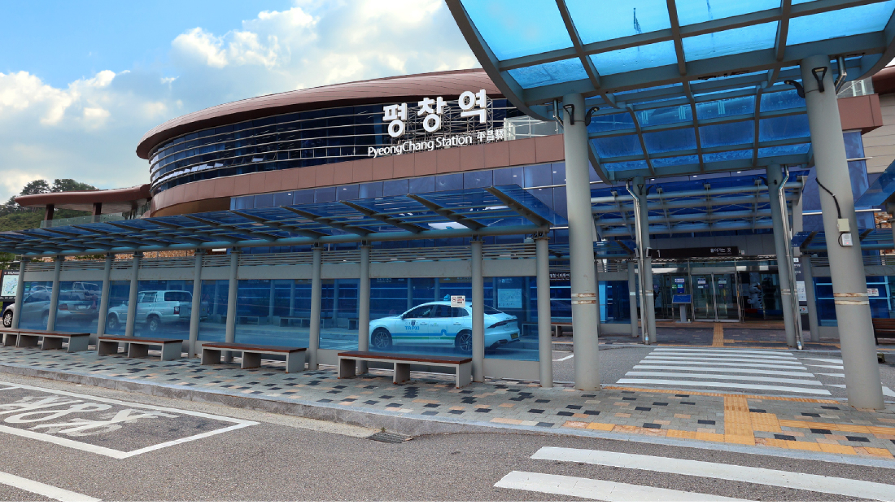
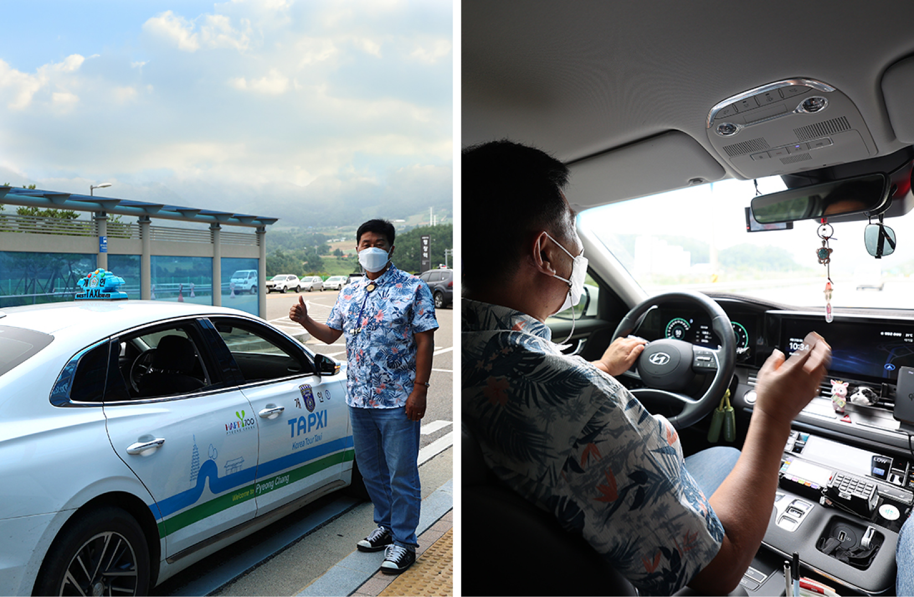
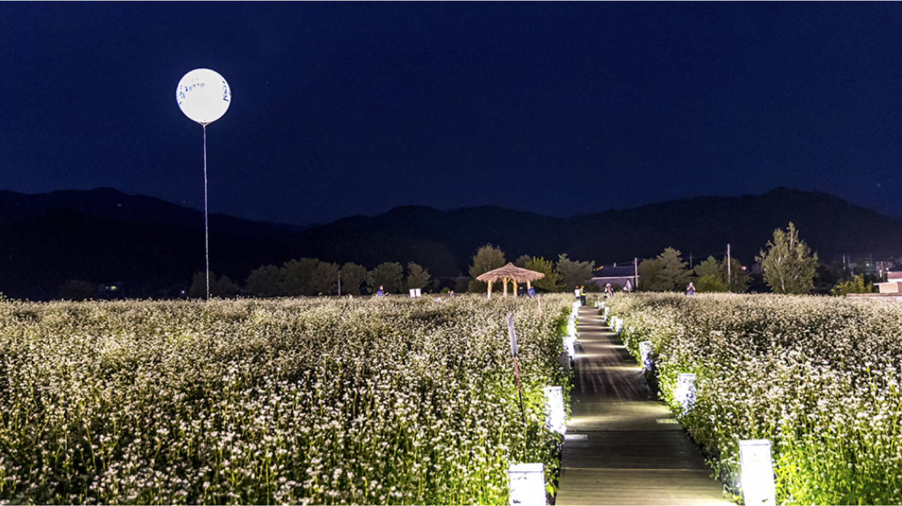

푸른 숲을 달려본 적 있으신가요?
유난히 날이 좋은 주말, 누구나 창 밖을 보며 밖으로 나가야만 하는 날씨라고 느껴본 적이 있을 것이다. 계절이 바뀌는 것을 말해주는 하늘과 초록빛 나무들을 보며 감탄하다 보면 당장이라도 여행을 떠나고 싶어진다. 하지만 푸른 숲에 둘러싸여 시원한 하늘을 볼 수 있는 자연으로의 여행은 장소를 알아보고 계획을 세우고 교통수단을 알아보다가 결국 불가능하다고 생각해 포기하게 된다. 이제 누구나 한 번쯤 꿈꿔본 적 있는 자연으로의 당일치기 여행의 로망을 평창에서 이룰 수 있다. 자동차를 오래 운전할 필요도 어디를 갈지 급하게 찾아보는 귀찮음도 없다.
평창군에서 지원하는 [평창관광택시 투어]는 택시를 타고 다양한 테마 별 코스로 평창의 곳곳을 여행하는 상품이다. 교통수단부터 여행 코스까지 전체의 투어를 편하게 즐길 수 있다. 단순히 평창에서 택시만 타고 여행하는 것이 전부가 아니다. KTX를 타고 평창에 오는 것부터 평창 여행의 시작이다. 기차를 타고 어딘가로 떠난다는 사실만으로도 가슴이 설레는 것이 여행의 매력이 아닐까 싶다.
[평창관광택시 투어]는 서울역 혹은 청량리역에서 아침 열차를 타면서 시작된다. 기차를 타고 도심에서 벗어나면서 시시각각 변하는 창 밖 풍경에 빠져있다 보면 어느새 평창역에서 내려야 하는 시간이다. 짧은 기차여행의 아쉬움을 뒤로한 채 평창역으로 나오면 시원하고 깨끗한 공기가 가장 먼저 우리를 맞아준다. 차가운 공기를 한껏 들이마시며 평창에 온 걸 실감할 때쯤 진정한 여행이 시작된다.
여행하는 하루 동안 우리의 발이 되어줄 택시 기사님과 만나 가보고 싶은 첫 번째 목적지인 ‘허브나라농원’으로 출발했다. 허브나라로 가는 동안 택시에서 평창의 아름다운 자연을 바라보는 것도 택시투어가 주는 선물 같은 시간이다. 이 시간 동안 자연의 푸르름을 눈에 마음껏 담아 가길 바란다. 이름부터 향기로운 허브나라에 도착하면서 사계절 내내 은은한 향을 내뿜는 허브와 아름다운 꽃들이 주변을 감싼다. 허브향에 둘러싸여 산책을 하다 보면 나에게도 향기가 스며드는 것처럼 느껴진다. 허브나라 안에 있는 카페와 레스토랑에서 간단히 음료를 마시며 여유로운 시간을 보내도 좋고, 다양한 체험활동으로 허브나라를 두 배로 즐기는 방법도 있다. 자신만의 방식으로 향기로운 시간을 맘껏 즐기고 한결 여유로워진 기분으로 여행을 즐길 수 있다.

다음은 우리의 마음을 풍요롭게 해줄 ‘효석달빛언덕’으로 이동할 차례이다. 평창 하면 떠오르는 단어들 ‘메밀꽃’ ‘메밀밭’ ‘이효석’ 등 평창과 이효석 그리고 아름다운 메밀꽃은 빼놓을 수 없는 평창의 자랑이다. 소설 ‘메밀꽃 필 무렵’의 실제 배경인 봉평에 위치한 ‘효석달빛언덕’은 책 박물관, 근대문학 체험관, 이효석 문학체험관 등 즐길 거리가 많은 곳이다. 이효석 생가에서부터 근대문학 체험관까지 작가의 생애를 느낄 수 있을 뿐만 아니라 다양한 조형물들과 문학작품을 테마로 조성된 광장에서도 작품 속 아름다운 풍경을 느끼기에 충분하다. 해가 드는 광장에서 탁 트인 풍경을 조망하는 것도 좋고 차분히 체험관에서 작품을 감상하고 작가의 작품과 생애를 공부하는 것도 좋다. 자신만의 방법으로 평창을 배경으로 한 문학작품 속에 스며들 수 있다.
편안하게 조성된 문학공간과 아름다운 자연의 조화를 함께 느낄 수 있어서 문학을 즐겨 찾지 않는 사람들에게도 매력적인 공간이 되어 줄 것이다. 매일같이 바쁘고 빠르게만 돌아가는 일상을 사는 우리에게 잠시 천천히 사유하며 온전히 자신만을 위해 시간을 사용할 수 있는 여유를 선물해 줄 수 있는 곳이다. 어른들에게는 여유를 아이들에게는 자유를 줄 수 있는 공원과 작품을 여러 방식으로 느껴볼 수 있는 문학 체험관에서의 시간은 어른 아이 모두에게 마음의 양식을 선물해 줄 것이다. 마음의 양식을 배불리 채웠다면 이제 평창의 가장 큰 매력인 자연에 흠뻑 취할 수 있는 다음 여행지가 기다리고 있다.